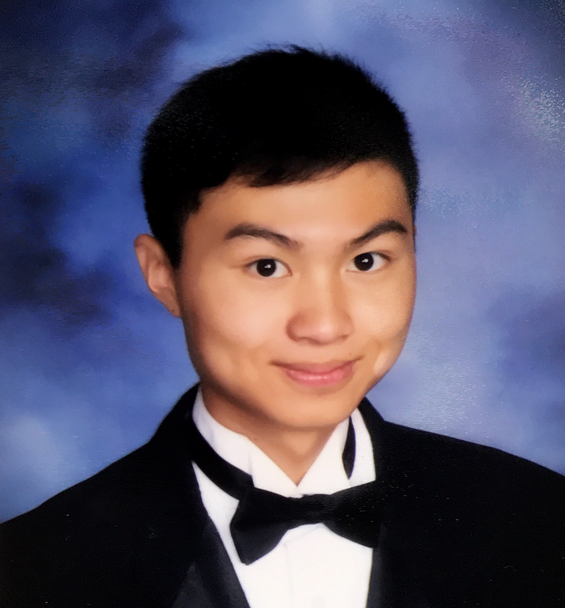

ABOUT ME

Hello! I am a current junior at the University of Pennsylvania pursuing a Master's in Computer Science, a dual-major between Computer Science and Mathematics (Bachelor's), and a dual-minor between Statistics and Data Science. I am enthusiastic about exploring the intersection of computers, statistics, and mathematics and hope to one day impact the world with my knowledge and experience. I am an avid traveler and hope to one day visit every country in the world. So far, I've been to 37 states and 13 countries. For my spring semester, I will be studying abroad at King's College London!